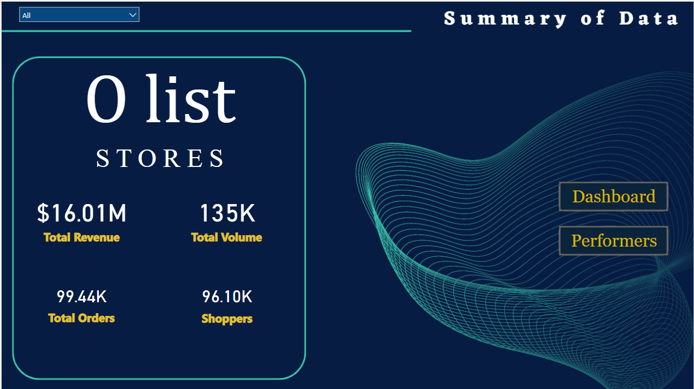

The subject matter of this dataset contains the stock prices of the 10 popular companies ( Apple,
Amazon, Netflix, Microsoft, Google, Facebook, Tesla, Walmart, Uber and Zoom) from 2015 to 2016 (day level).
Public investors can use this analysis to make informed investment decisions, identify trends and patterns, assess risk and return potential, and determine the optimal allocation of their investment portfolios.

This is an analysis of the large cholera outbreak in late August 1853. About 3% of the population died within a couple of weeks. Poor parts of the city, such as S:t
Catherine parish was hit very hard..

Almost 3 years since the first report emerged about the deadly new respiratory disease millions of cases and lives lost have been reported. The NCDC is the Nigeria Centre for Disease Control and Prevention.
This analysis visualises situation report of Covid-19 cases in Nigeria up to year 2023 usisng dataset from the NCDC website.

This project combines 4 Taxi Trips tables using powerquery resulting in a total of 28 million Green Taxi trips in New York City from 2017 to 2020. The NYC Taxi Dashboard project aims to provide a comprehensive and interactive visualization platform that enables users to explore and analyze various aspects of New York City's taxi industry, including ride trends, revenue patterns, geographical insights, and other key metrics, to gain a deeper understanding of the industry and support data-driven decision-making.

A Brazilian eCommerce dataset of orders made at Olist Store from 2016 to 2018 at multiple marketplaces in Brazil. This is real commercial data and it has been anonymized to protect the privacy of data subjects.These insights provide a glimpse into the performance and trends observed in the dataset of orders made at Olist Store. Further analysis and exploration of the dataset can reveal more detailed findings and opportunities for the business.
The Mexican restaurant rating dashboard provides users with a consolidated view of customer ratings and reviews for various Mexican restaurants, allowing them to compare and analyze the performance and popularity of different establishments, make informed dining choices, Pricing and gain valuable insights into the overall quality of Mexican cuisine at different areas.

All Dashboards and vizualizations completed on Power BI software.